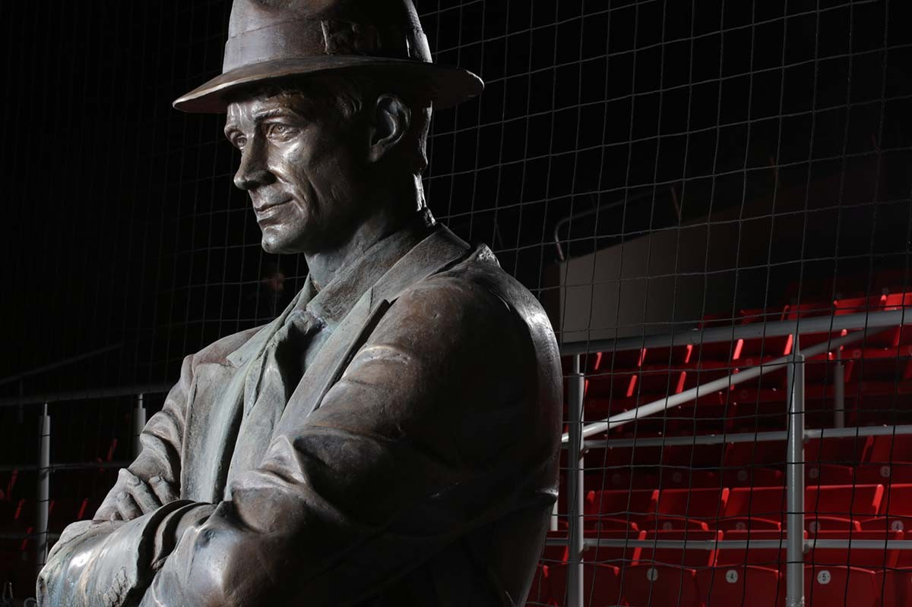

БИОГРАФИЯ ФУТБОЛЬНОГО КЛУБА «СПАРТАК» МОСКВА
Спартак Москва – популярный футбольный клуб России и СССР, его часто называют «народная команда». Это самая титулованная команда в истории современного российского и советского футбола. Трофеи клуба: 12 раз чемпион СССР, 10 раз брал кубок СССР, 10-кратный чемпион России, 3 раза становился обладателем кубка России, обладатель суперкубка России, 6-кратный победитель кубка Содружества, полуфиналист главных европейский турниров (Кубок европейский чемпионов, Кубок обладателей кубков, Кубок УЕФА).
ИСТОРИЯ СОЗДАНИЯ СПАРТАКА
Официально принято считать, что футбольный клуб «Спартак» родился лишь в 1922 году, однако если изучить историю более детально и глубоко, время создания команды уходит в 1883 год. Тогда было организовано Русское гимнастическое общество «Сокол» (РГО «Сокол»), занимающееся зимними видами спорта и гимнастикой, проповедующее здоровый образ жизни. В 1897 году в обществе появился футбол. Организация снимала дачу, куда приглашала детей взрослых, чтобы устроить соревнования по «английскому ножному мячу». Игра стала невероятно популярной и быстро захватила всю страну, поспособствовав появлению многих команд. До 1917 года РГО «Сокол» арендовал стадионы у других клубов, чтобы проводить собственные матчи. Затем Николай Петрович Старостин посоветовал пустырь возле своего дома, на котором и была построена новая арена для команды. Вплоть до октябрьской революции коллектив выступал как РГО «Сокол», однако новая советская власть оказалась против такого названия, усмотрев в нем «буржуазные элементы», многие руководители организации были арестованы. Такая же участь постигла и другие футбольные сообщества. Чтобы сохранить клуб, в 1922 году владельцы переименовали «Сокол» в «Московский спортивный кружок» (МСК). Это название пришлось по вкусу властям, так как не противоречило советским устоям.
